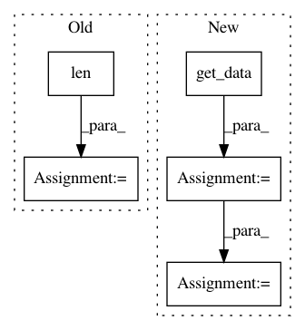

b5474182feb30125bc78ebff838ba7bb9000de78,chaco/contour_line_plot.py,ContourLinePlot,_update_contours,#ContourLinePlot#,113
Before Change
// XXX: this truncation is causing errors in Cntr() as of r13735
xdata = self.index._xdata.get_data()
ydata = self.index._ydata.get_data()
xs = linspace(xdata[0], xdata[-1], len(xdata)-1)
ys = linspace(ydata[0], ydata[-1], len(ydata)-1)
xg, yg = meshgrid(xs, ys)
if self.orientation == "h":
c = Cntr(xg, yg, self.value.raw_value)
After Change
data = self.value.get_data_mask()
mask &= isfinite(data)
else:
data = self.value.get_data()
mask = isfinite(data)
x_data, y_data = self.index.get_data()
xs = x_data.get_data()
ys = y_data.get_data()
xg, yg = meshgrid(xs, ys)
// note: contour wants mask True in invalid locations
c = Cntr(xg, yg, data, ~mask)
self._cached_contours = {}
for level in self._levels:
self._cached_contours[level] = []
In pattern: SUPERPATTERN
Frequency: 3
Non-data size: 5
Instances
Project Name: enthought/chaco
Commit Name: b5474182feb30125bc78ebff838ba7bb9000de78
Time: 2016-11-16
Author: cwebster@enthought.com
File Name: chaco/contour_line_plot.py
Class Name: ContourLinePlot
Method Name: _update_contours
Project Name: nilearn/nilearn
Commit Name: 380c0681bf8b9252befec411d12b71b0678222c6
Time: 2015-02-10
Author: danilobzdok@gmail.com
File Name: nilearn/input_data/tests/test_nifti_masker.py
Class Name:
Method Name: test_mask_4d
Project Name: enthought/chaco
Commit Name: b5474182feb30125bc78ebff838ba7bb9000de78
Time: 2016-11-16
Author: cwebster@enthought.com
File Name: chaco/contour_poly_plot.py
Class Name: ContourPolyPlot
Method Name: _update_polys